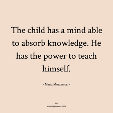

Teaching is a difficult job. The ultimate reward is knowing that you have the opportunity to have an impact on a young person’s life. However, not every student is created equal. Most teachers will tell you that they don’t have favorites, but the truth is that there are students who possess certain characteristics that make them ideal pupils. These students are naturally endearing to teachers, and it is difficult not to embrace them because they make your job easier. Read on to discover the 10 traits all great students possess.
They Ask Questions
Most teachers want students to ask questions when they do not understand a concept that is being taught. It is truly the only way a teacher knows whether you really understand something. If no questions are asked, then the teacher has to assume that you understood that concept. Good students aren’t afraid to ask questions because they know that if they do not get a particular concept, it could hurt them later on when that skill is expanded. Asking questions is often beneficial to the class as a whole because chances are if you have that question, there are other students who have that same question.
They're Hard Workers
The perfect student isn’t necessarily the smartest student. There are plenty of students who are blessed with natural intelligence but lack the self-discipline to hone that intelligence. Teachers love students who choose to work hard no matter what their level of intelligence is. The hardest working students will ultimately be the most successful in life. Being a hard worker in school means completing assignments on time, putting your maximum effort into every assignment, asking for extra help when you need it, spending the time to study for tests and quizzes, recognizing weaknesses, and looking for ways to improve.
They're Involved
Being involved in extra-curricular activities can help a student gain confidence, which can improve academic success. Most schools provide a plethora of extracurricular activities that students can participate in. Most good students get involved in some activity whether it is athletics, Future Farmers of America, or student council. These activities provide so many learning opportunities that a traditional classroom simply can’t. These activities also provide opportunities to take on leadership roles and they often teach people to work together as a team to accomplish a common goal.
They're Leaders
Teachers love good students who are natural leaders within their classroom. Whole classes have their own unique personalities and often those classes with good leaders are good classes. Likewise, those classes that lack peer leadership can be the most difficult to handle. Leadership skills are often innate. There are those who have it and those who don’t. It is also a skill that develops over time amongst your peers. Being trustworthy is a key component of being a leader. If your classmates don’t trust you, then you won't be a leader. If you are a leader amongst your peers, you have the responsibility to lead by example and the ultimate power to motivate others to be successful.
They're Motivated
Motivation comes from many places. The best students are the ones who are motivated to be successful. Likewise, students who lack motivation are the ones who are the hardest to reach, are often in trouble, and eventually, drop out of school.
Students who are motivated to learn are easy to teach. They want to be at school, want to learn, and want to succeed. Motivation means different things to different people. There are very few people that aren’t motivated by something. Good teachers will figure out how to motivate most students in some way, but those students who are self-motivated are far easier to reach than those who aren’t.
They're Problem Solvers
No skill is lacking more than that of the ability to be a problem solver. With the Common Core state standards requiring students to be adept at problem-solving, this is a serious skill that schools have to work extensively at developing. Students who possess true problem-solving skills are few and far between in this generation largely because of the accessibility that they have to information
Those students who do possess true problem-solving abilities are rare gems that teachers love. They can be used as a resource to help develop other students into becoming problem solvers.
They Seize Opportunities
One of the greatest opportunities in the U.S. is that every child has free and public education. Unfortunately, not every person takes full advantage of that opportunity. It is true that every student must attend school for some period of time, but that doesn’t mean that every student seizes that opportunity and maximizes their learning potential.
The opportunity to learn is undervalued in the United States. Some parents don’t see value in education and that's passed on to their children. It is a sad reality that is often overlooked in the school reform movement. The best students take advantage of the opportunities they are afforded and value the education they receive.
They're Solid Citizens
Teachers will tell you that classes full of students who follow the rules and procedures have a better chance of maximizing their learning potential. Students who are well behaved are likely to learn more than their counterparts who become student discipline statistics. There are plenty of smart students who are discipline problems. In fact, those students are often the source of ultimate frustration for teachers because they will likely never maximize their intelligence unless they choose to change their behavior.
Students who are well behaved in class are easy for teachers to deal with, even if they struggle academically. Nobody wants to work with a student who constantly causes problems, but teachers will try to move mountains for students who are polite, respectful, and follow the rules.
They Have a Support System
Unfortunately, this quality is one that individual students often have very little control over. You cannot control who your parents or guardians are. It is also important to note that there are plenty of successful people who did not have a good support system growing up. It is something that you can overcome, but it does make it a lot easier if you have a healthy support system in place.
These are people that have your best interest in mind. They push you to success, offer advice, and guide and direct your decisions throughout your life. In school, they attend parent/teacher conferences, make sure your homework is done, require you to have good grades, and generally motivate you to set and reach academic goals. They are there for you in times of adversity and they cheer for you in times that you are successful. Having a great support system doesn’t make or break you as a student, but it definitely gives you an advantage.
They're Trustworthy
Being trustworthy is a quality that will endear you not only to your teachers but also to your classmates. No one wants to surround themselves with people whom they ultimately cannot trust. Teachers love students and classes that they trust because they can give them liberties that often provide learning opportunities they would not be afforded otherwise.
For example, if a teacher had an opportunity to take a group of students to listen to a speech by the president of the United States, the teacher may turn the opportunity down if the class is not trustworthy. When a teacher gives you an opportunity, she is putting faith into you that you are trustworthy enough to handle that opportunity. Good students value opportunities to prove that they are trustworthy.